Um app que ensina jogando
Aplicativo no estilo do Duolingo: o conteúdo é dividido em trilhas de aprendizado, e cada lição concluída rende pontos e conquistas.
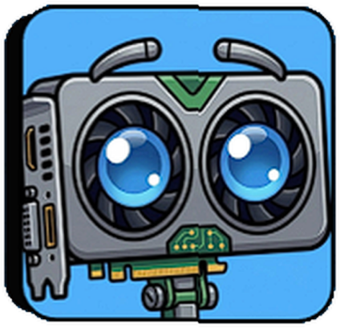
PCEDUC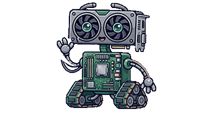
Trilhas, pontos e conquistas.
O PCEDUC é um aplicativo educativo para crianças, adolescentes e adultos.
Projeto de extensão da UNINASSAU Campina Grande — Ciência da Computação
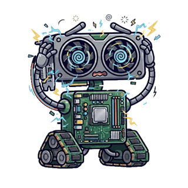
Usamos computadores todos os dias, mas poucos sabem como eles funcionam por dentro.
O PCEDUC transforma essa curiosidade em aprendizado, passo a passo e sem complicação.
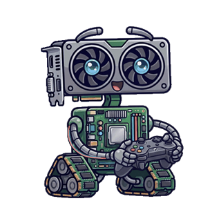
Aplicativo no estilo do Duolingo: o conteúdo é dividido em trilhas de aprendizado, e cada lição concluída rende pontos e conquistas.
Explica o que cada componente do computador faz e como ele funciona, de forma simples e visual.
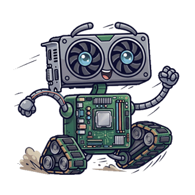
Lições organizadas em sequência: cada trilha leva você um passo adiante.
Cada acerto gera XP, que se acumula e define o seu nível. Cada lição concluída mostra o seu progresso.
Medalhas e marcos recompensam a dedicação e motivam a continuar.
Ao concluir trilhas ou atingir metas de XP, você ganha peças virtuais que montam um PC completo no seu perfil. Às vezes, uma peça rara aparece como recompensa-surpresa.
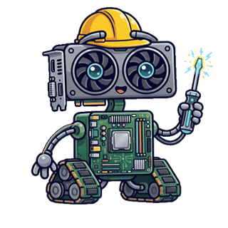
Conecta e integra todos os componentes.
O cérebro que executa as instruções.
Gera as imagens exibidas na tela.
Às vezes, uma peça rara aparece como recompensa-surpresa.
Guarda os dados em uso no momento.
Mantém arquivos e programas salvos.
Fornece energia a cada peça.
E muito mais, trilha após trilha.
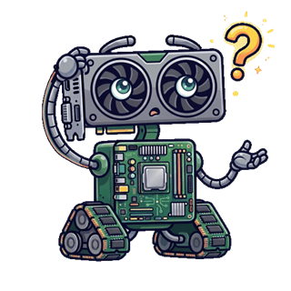
Processador. O processador é o cérebro do computador: ele executa as instruções.
Para quem é
O foco são os adolescentes em geral. Crianças e adultos também aprendem de forma entretida, no seu ritmo.
Etapas curtas e visual divertido, que transformam o aprendizado em brincadeira.
Estudantes do ensino médio: desafios e pontuação despertam a curiosidade por tecnologia.
Uma forma prática de entender o computador usado no dia a dia.
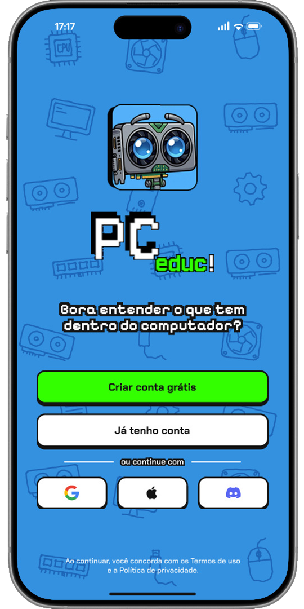
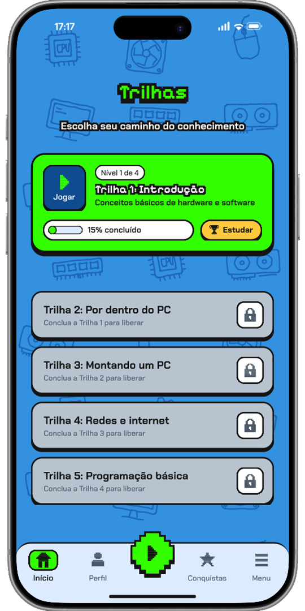
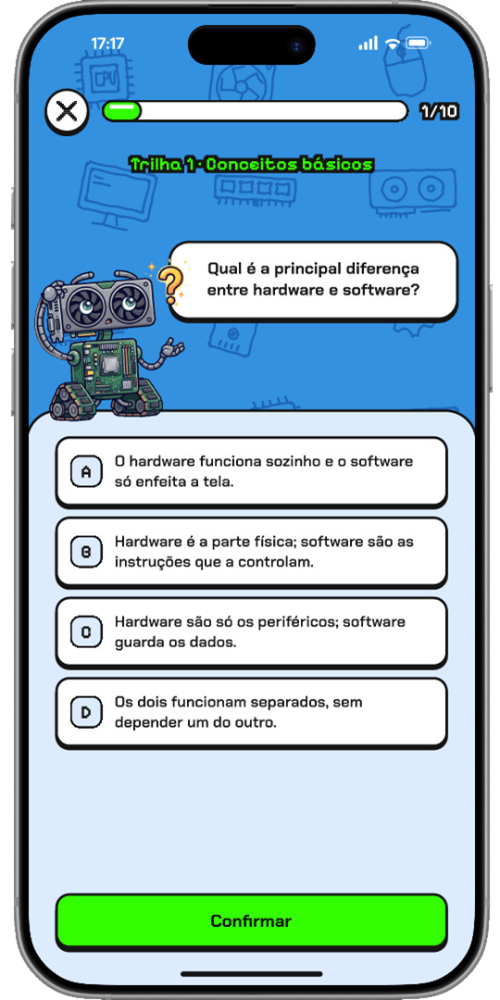
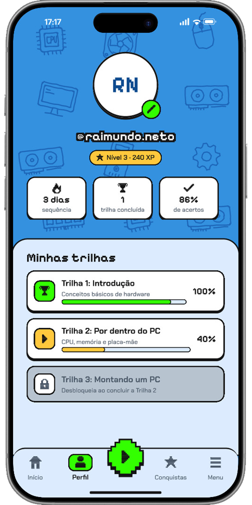
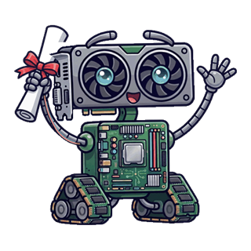
Foto da equipe em breve
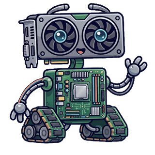
A aplicação está em desenvolvimento.